TERENGGANU
BEACH ON BEAUTIFUL CLOUD IN TERENGGANU
1.Masjid Kristal Terengganu: A Jewel of Islamic Architecture
A beautiful example of contemporary Islamic architecture and a representation of spiritual devotion, Masjid Kristal is situated in the charming city of Kuala Terengganu. This famous mosque is a major cultural and religious monument in Malaysia and draws tourists from all over the world with its stunning crystal like structure. One of the best representations of the elegance and creativity of Islamic architecture is Masjid Kristal Terengganu. It is a beloved landmark in Malaysia because of its distinctive design, cultural relevance, and communal involvement. Masjid Kristal is a place of prayer as well as a cultural destination that captures the essence of Terengganu and its people through an harmonious combination of tradition and contemporary.
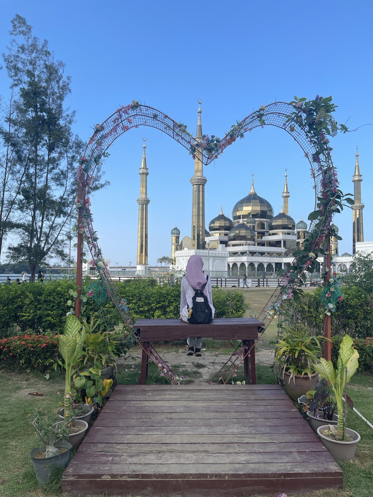
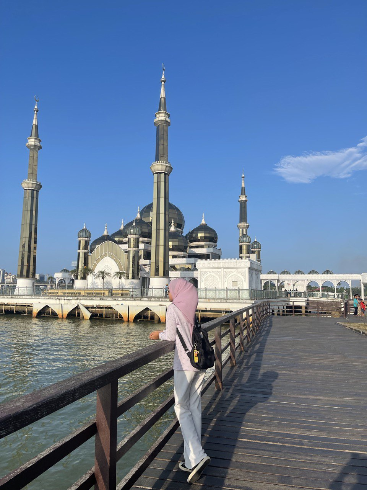
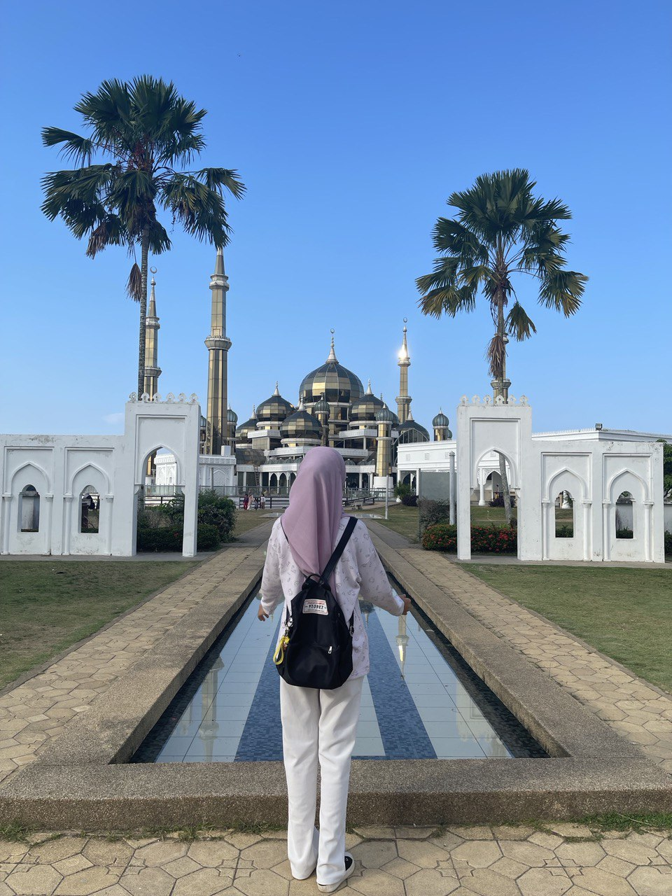
2.Exploring Pesisir Payang: A Cultural and Culinary Haven in Kuala Terengganu
The Kuala Terengganu waterfront district of Pesisir Payang, which is next to Pasar Payang, is a mesmerizing fusion of vibrant markets, stunning riverbank views, and cultural history. This lively neighborhood offers guests a great range of activities that showcase the charm and hospitality of Terengganu, acting as a gateway to the region's rich history and customs.More than just a waterfront area, Pesisir Payang in Kuala Terengganu is a bustling tapestry of business, culture, and gastronomic pleasures that beckons tourists to discover and relish Terengganu's true spirit. Embracing the region's rich legacy and hospitality, Pesisir Payang offers a captivating experience, whether you choose to shop at Pasar Payang, stroll along the riverbank, or savor local fare.
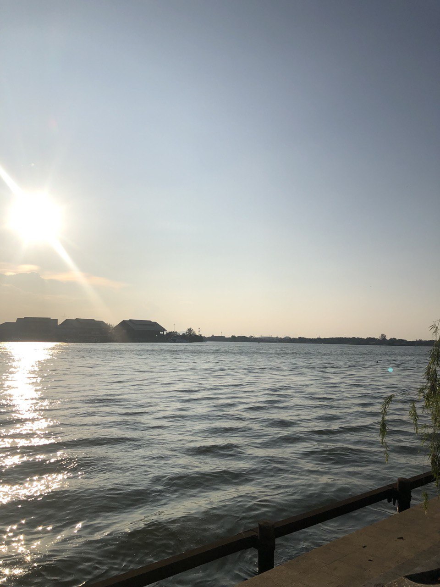
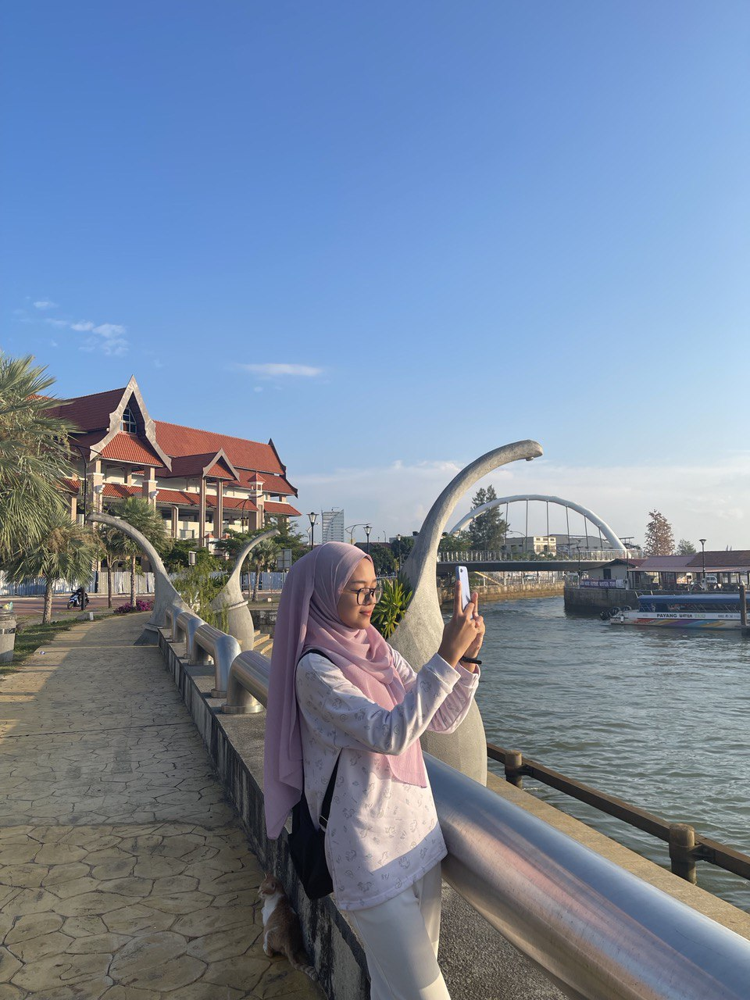
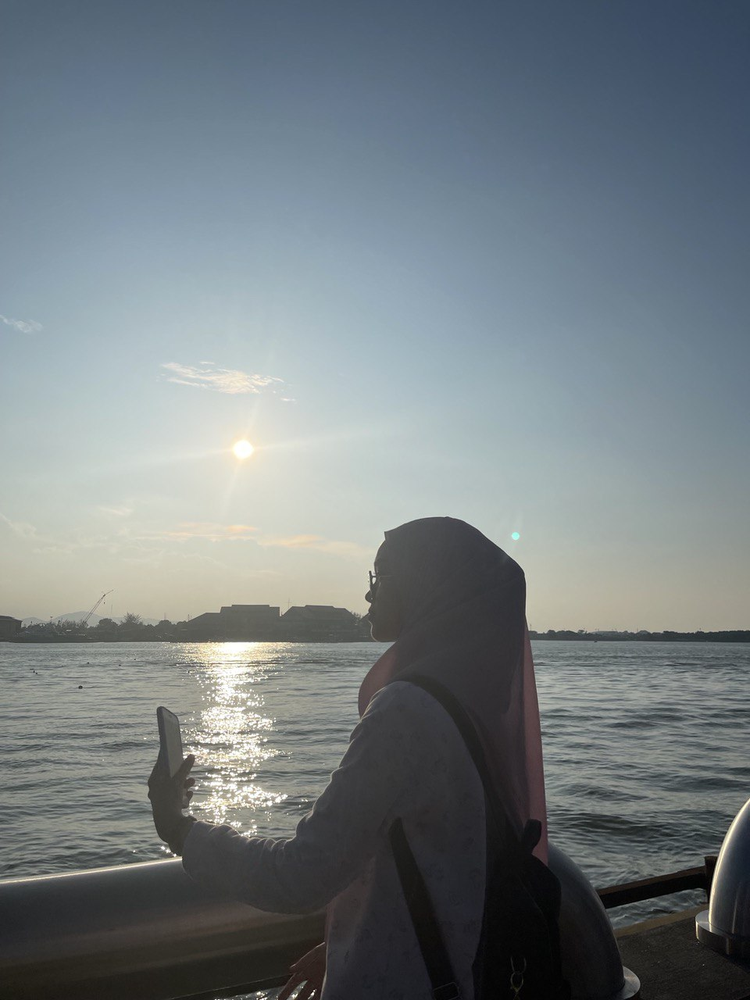
3.Kuala Terengganu Drawbridge: Icon of Innovation and Connectivity
The Kuala Terengganu Drawbridge, also referred to as the "Jambatan Angkat," is a monument of contemporary engineering and connectivity that stands proudly over the Terengganu River in Malaysia. This architectural masterpiece demonstrates Malaysia's dedication to innovation and urban development while also improving transportation efficiency.More than just a bridge, the Kuala Terengganu Drawbridge, also known as "Jambatan Angkat," is a symbol of Malaysia's engineering prowess, rich cultural legacy, and dedication to connectedness. The drawbridge in Terengganu fosters economic growth, urban development, and tourism in addition to facilitating traffic through its inventive design, architectural brilliance, and cultural value. The Kuala Terengganu Drawbridge unites communities and cultures by bridging the gorgeous Terengganu River between past traditions and future aspirations. It is a symbol of progress and unity.
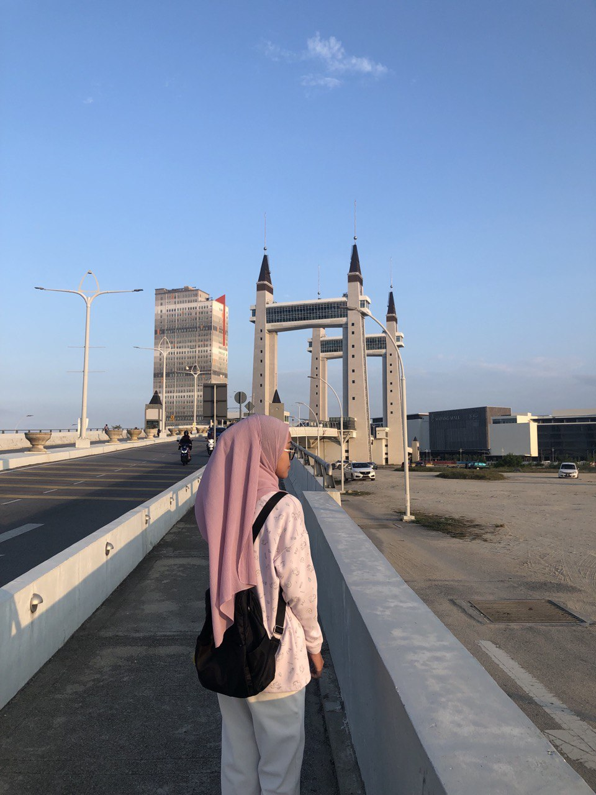
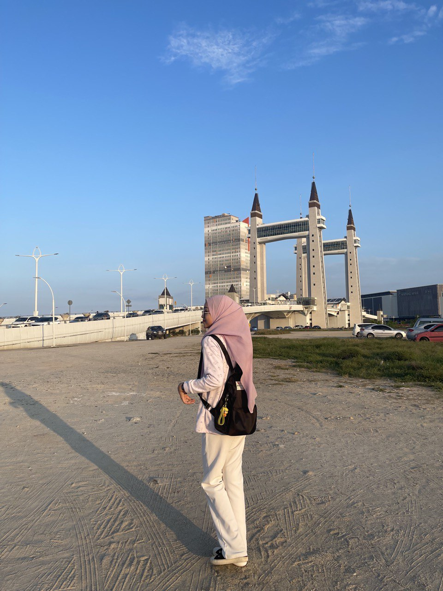
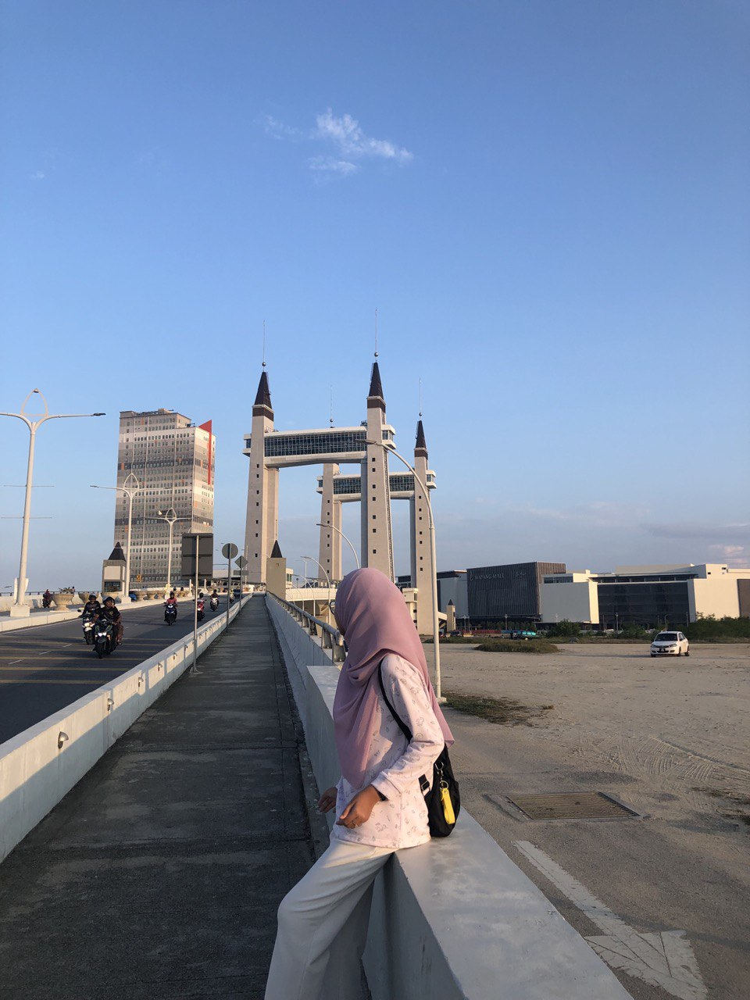
3.Rantau Abang: Sanctuary of Sea Turtles and Coastal Serenity
Rantau Abang is more than simply a village; it is a refuge for sea turtles and a retreat for individuals seeking peace amidst breathtaking scenery. It is situated along the picturesque coast of Terengganu, Malaysia. Malaysia's cultural and natural legacy places great importance on this coastal treasure, which is well-known for its immaculate beaches and abundant biodiversity.Terengganu's Rantau Abang is a sea turtle sanctuary and a peaceful coastal retreat. It is a highly sought after location for ecotourism and nature enthusiasts because of its immaculate beaches, abundant wildlife, and dedication to conservation. Rantau Abang welcomes tourists to see the splendors of Malaysia's coastline and help save its marine treasures while maintaining its natural heritage and cultural customs. Rantau Abang provides an incredible trip into the center of Terengganu's natural grandeur, whether you're looking for adventure, relaxation, or a closer relationship with the natural world.
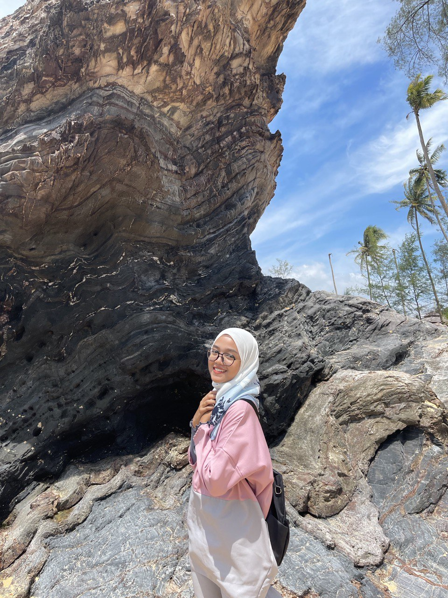
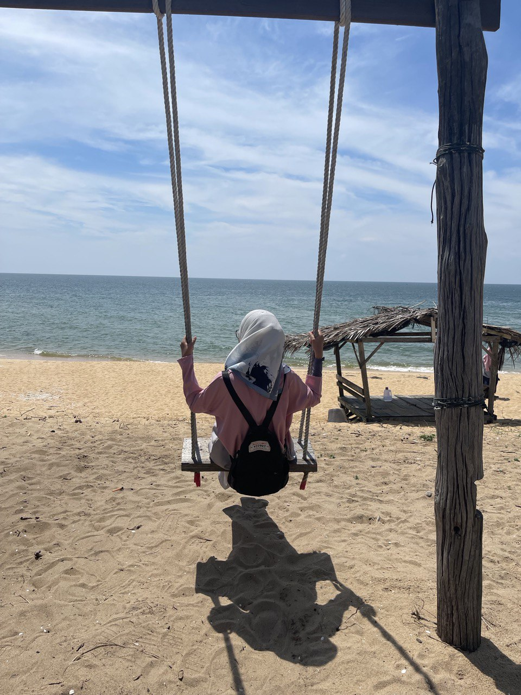
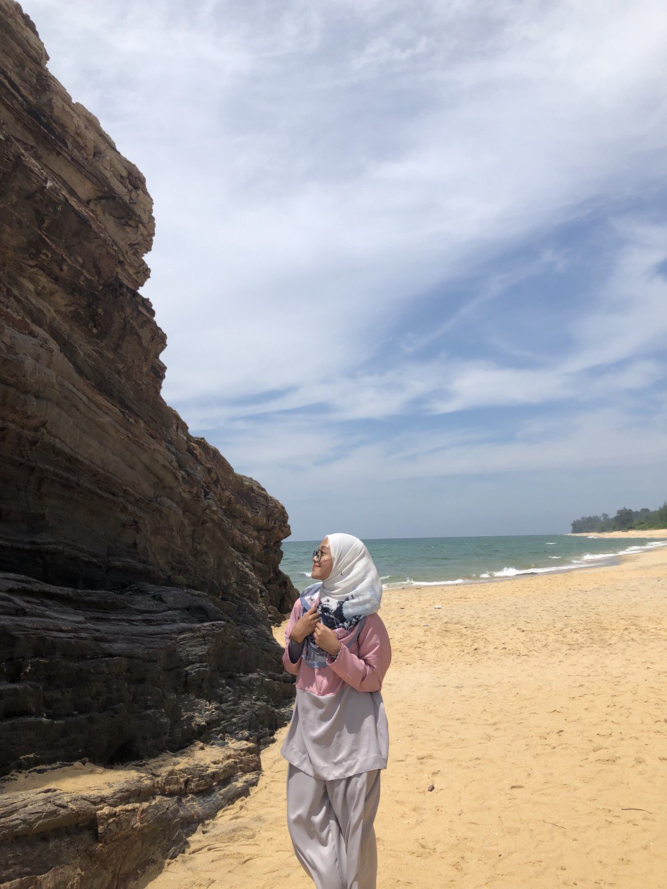